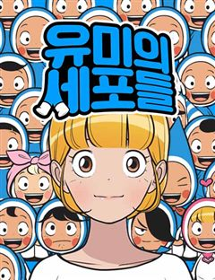

로맨스 웹툰 추천 TOP 30
설렘·연애 이야기를 좋아한다면 이 목록부터 보세요. 네이버웹툰·카카오웹툰·레진코믹스에서 조건에 맞는 작품 978개 중 인기 순으로 30개를 골랐어요. 인기 TOP 3: 연애혁명, 이번 생은 가주가 되겠습니다, 세이렌: 악당과 계약 가족이 되었다
2026-10-01 기준 · 성인 작품 제외
내 취향으로 더 좁혀서 추천받기 →-
1
 네이버웹툰
네이버웹툰연애혁명
평범하면서 금사빠인 고등학생 순정남 공주영은 까칠하고 차가운 여학생 왕자림을 보고 사랑에 빠져버린다. 너무 다른 둘, 괜찮을까?
로맨스몰아보기명작다정남혐관로맨스네이버웹툰에서 보기 → -
2
 카카오웹툰
카카오웹툰이번 생은 가주가 되겠습니다
“…한번 해 보자. 내가 가주가 되는 거야.” 제국에서 제일가는 가문, 롬바르디의 사생아로 환생한 피렌티아. 게다가 이 가문은 막대한 부는 물론 외교와 문화까지 통달한 말그대로 제국의 역사 자체! 금수저 오브 금수저 인생 당첨! 앞으로는 탄탄대로일 거라 생각했는데…. 아버지는 돌아가시…
로맨스사이다로판회귀카카오웹툰에서 보기 → -
3
 카카오웹툰
카카오웹툰세이렌: 악당과 계약 가족이 되었다
아리아는 계약 결혼을 제안했다. 그것도, 악마에게 영혼을 팔았다는 발렌타인의 대공자에게. 자신을 지키고, 그를 지키기 위해서. [나와 결혼해.] 아리아는 단풍잎 같은 손으로 쪽지와 함께 혼인 서약서를 내밀었다. [계약 결혼이니까 10년 뒤에 이혼…….] 그러자 어린 대공자는 쓰고 있던…
로맨스로판회귀카카오웹툰에서 보기 → -
4

-
5
 카카오웹툰
카카오웹툰엄마가 계약결혼 했다
리리카는 술주정뱅이 어머니를 모시고 하루하루 먹고 사는 빈민가의 소녀다. 그러던 어느날...... “꺄악, 뜨거워! 싫어!” 어머니가 비명을 지르며 잠에서 깨어나더니, “리리,살아있구나, 어려졌니?” 엉뚱한 소리를 하시고 “오늘이 며칠이지?” 정신을 못 차리시더니 “이럴수가, 돌아왔어…
로맨스힐링로판육아물카카오웹툰에서 보기 → -
6
 네이버웹툰
네이버웹툰여신강림
네웹 대표 글로벌 인기작! 주경, 수호, 서준. 세 청춘의 두근두근 눈호강 로맨스~♡ 메이크업으로 여신이 된 주경이는 꿈과 사랑을 이룰 수 있을까?
로맨스몰아보기아이돌드라마&영화 원작웹툰인플루언서네이버웹툰에서 보기 → -
7
 네이버웹툰
네이버웹툰소녀의 세계
완벽해 보이지만 사실 외로웠던 백조들과 맘씨 착한 오리가 만나 여러 갈등을 함께 겪으며 진짜 친구가 되어가는 소녀들의 찐 우정물
로맨스설렘폭발공감우정청춘네이버웹툰에서 보기 → -
8
 카카오웹툰
카카오웹툰남편을 내 편으로 만드는 방법
판타지 소설 속 남편의 손에 죽는 악역 조연, ‘루드베키아’가 되었다. 이 세계의 망할 아버지는 내 정략결혼 상대를 또 물어왔다. 문제는 그 상대가 바로 날 죽이게 될 남편이라는 것! 일단은 살길을 찾아야 한다. 북부 사람들에게 최대한 무해하게 보이면서 원작에서 내가 죽일 남편의 여동…
로맨스설렘폭발눈물샘자극로판빙의카카오웹툰에서 보기 → -
9
 카카오웹툰
카카오웹툰악역의 엔딩은 죽음뿐
역하렘 공략 게임의 악역, 에카르트 공작가의 하나뿐인 공녀이자 입양아 페넬로페로 빙의했다. 그런데 하필 난이도는 극악! 뭘 해도 엔딩은 죽음뿐! ‘진짜 공녀’가 나타나기 전에 여주의 어장 중 한 명을 공략해서 살아남아야 한다. 사사건건 시비를 거는 오빠 1, 2. 모든 루트가 죽음으로…
로맨스서스펜스자극적인로판빙의카카오웹툰에서 보기 → -
10
 네이버웹툰
네이버웹툰바른연애 길잡이
매일 다이어리에 세워 둔 계획을 지키며 바른 생활을 실천하는 정바름. 하지만 동아리 선배에게 느끼는 연애 감정만큼은 계획처럼 진행되지 않는데... 모두의 로망을 충족시켜 줄 설렘 달달 캠퍼스 로맨스!
로맨스동아리캠퍼스로맨스역하렘삼각관계네이버웹툰에서 보기 → -
11
 네이버웹툰
네이버웹툰이번 생도 잘 부탁해
전생을 기억하는 삶은 어떨까? 매번 전생을 기억하는 무료한 삶을 살던 18회차 인생, 윤주원이란 이름으로 살던 12살에 서하를 만나게 된다. 특별할 거 없던 그 아이가 무료한 삶을 특별하게 만들어주었지만 교통사고로 18회차 인생이 끝나고 만다. 다시 태어난 19회차 인생, 윤주원에서…
로맨스몰아보기폭스남재회구원서사네이버웹툰에서 보기 → -
12
 카카오웹툰
카카오웹툰무림세가 천대받는 손녀 딸이 되었다
무협지 속 세상으로 빙의한 주인공. 남주인공을 영웅의 길로 이끄는 참스승이자 완전체, 백리의강의 어리석은 민폐딸 백리연으로 빙의한다. 뜻밖의 죽임을 당하고, 눈을 떠보니 모든 것을 되돌릴 수 있는 아이 때로 회귀하는데. "나, 이번엔 사랑받을 수 있는 거야?" 이번 생에서는 민페딸이…
로맨스사이다로판육아물카카오웹툰에서 보기 → -
13
 카카오웹툰
카카오웹툰빙의자를 위한 특혜
※사후 세계를 대비하세요! 죽기 직전에 받은 이상한 스팸문자. 죽은 줄 알고 눈떠보니 빙의심사국이다. 정말 사후 세계가 있다고? 책 속으로 빙의될 거라고? "특별히 선호하는 장르가 있으신가요?" 전생에 덕질로 모든 장르를 섭렵한 나. 다음 생은 귀염 뽀짝한 여자아이가 되…
로맨스사이다로판빙의카카오웹툰에서 보기 → -
14
-
15
 카카오웹툰
카카오웹툰다시 한번, 빛 속으로
성녀로 추앙 받는 동생을 죽이려고 했다는 누명을 썼다. 나를 믿어주는 사람 하나 없었고, 감싸주는 사람 하나 없었다. 심지어 피를 나눈 가족마저도. 14살의 겨울. 이덴베르의 4황녀였던 나는 사람들 앞에서 비참하게 목이 잘렸다. 생을 마감하고, 새로 눈을 뜬 나에게 다가온 것은… “아…
로맨스눈물샘자극로판힐링카카오웹툰에서 보기 → -
16
 카카오웹툰
카카오웹툰악녀라서 편하고 좋은데요?
"악녀라서 뭐? 편하고 좋기만 한데?" 2020년 카카오페이지 올해의 웹소설 <악녀라서 편하고 좋은데요?> 웹툰으로 화려하게 다시 태어나다! 은수저X, 금수저X :+: 오리하르콘 수저 :+: 악녀로 빙의한 윤도희 180,000,000도 인생 역전에 성공한다. 소심한 본체 그렇지 못한…
로맨스사이다로판빙의카카오웹툰에서 보기 → -
17
 카카오웹툰
카카오웹툰남편은 됐고, 돈이나 벌렵니다
여친 있는 남자의 아내가 되어 버렸다. 음, 건드리지 말아야겠지? “그럼 넌 바닥에서 자.” “뭐?” 싫은 눈치다. 그래, 바닥은 딱딱하지. 그렇다면 어쩔 수 없다. “손만 잡고 잘게. 누나 믿지?” 그런데 어쩌다 남편과 첫날밤에 침대를 부숴 버린 걸까……. * 황제의 눈밖에 나 유폐…
로맨스설렘폭발로판로맨틱코미디카카오웹툰에서 보기 → -
18
 카카오웹툰
카카오웹툰녹음의 관
남자주인공에게 트라우마를 남긴 계모의 딸에 빙의했다. 이 모든 것은 내가 열 다섯 살 때 쓴 소설 속 안. 괜찮아, 어떻게든 널 행복하게 만들어줄게. 내가 이 소설의 원작자라고! "저는 단 한번도 누님을 가족이라 생각한 적이 없습니다." 남주 행복 프로젝트, 열심히 실천하고 있다고 생…
로맨스로판빙의카카오웹툰에서 보기 → -
19
 네이버웹툰
네이버웹툰하루만 네가 되고 싶어
'완벽한 인생이었다, 그 애가 나타나기 전까지는' 반전에 반전을 거듭하는 치밀한 궁중 서스펜스 네이버웹툰 최강자전 19년 대표작.
로맨스서양왕족/귀족대형견남순정남네이버웹툰에서 보기 → -
20
 카카오웹툰
카카오웹툰남주의 입양딸이 되었습니다
"아이를 입양한다” 어느 날 갑자기 떨어진 북부의 주인 보레오티의 폭탄 발언. 그리고 기적처럼 만난 “검은색”을 지닌 아이. 그런데… “근☆육이 제일 좋아~ ☆불끈불끈☆ 모여라~ ٩(๑˃́ꇴ˂̀๑)۶” “이두근 (ง˙∇˙)ว, 삼두근 (ง˙∇˙) ง” “흉근 복근 짜릿해 ദ്ദി ˉ͈…
로맨스설렘폭발로판빙의카카오웹툰에서 보기 → -
21
 카카오웹툰
카카오웹툰내 남자 주인공의 아내가 되었다
남주 여주 커플의 아름다운 사랑으로 저주받은 용과 마물 그리고 최종 보스의 영혼까지 처참하게 박살 내는 소설 <황제와 성녀> "……하하, 차라리 지금 죽으면 좀 편히 갈 수 있으려나." 천재 마법사로 칭송받게 될 찬란한 장래, 그것보다 원하는 건 안락한 노후와 평화로운 미래… 이건만,…
로맨스설렘폭발로판힐링카카오웹툰에서 보기 → -
22
 네이버웹툰
네이버웹툰내 ID는 강남미인!
못생긴 얼굴에서 미인으로 새롭게 태어난 그녀, 강미래! 그런데... 어디서 본 듯 한데?
로맨스몰아보기최강자전2015 최강자전드라마&영화 원작웹툰네이버웹툰에서 보기 → -
23
 카카오웹툰
카카오웹툰사랑받는 막내는 처음이라
세계의 멸망을 막을 유일한 희망으로서 모두에게 희생을 강요받는 삶만 99번째. 제발 이번이 끝이길 바랐는데…! "아가씨가 태어나셨어요!" 기어코 100번째 삶을 시작하고 말았다. 어차피 또 영웅 취급하며 희생시키겠지. 그렇게 생각했는데, "무사히 태어나줘서 고맙구나" "언니가 다 구해…
로맨스힐링로판환생카카오웹툰에서 보기 → -
24
 네이버웹툰
네이버웹툰세레나
왕국에서 가장 화려했던 나의 가문이 망했다. 할머니가 선택한 유일한 방법은 계약 결혼뿐. 하필 그 남자와.
로맨스결혼생활악역이주인공왕족/귀족공식미남네이버웹툰에서 보기 → -
25
 카카오웹툰
카카오웹툰점괘보는 공녀님
귀신 보는 능력을 가진 탑배우 이시아. 사고 후 '카밀라 소르펠'의 몸에서 눈을 뜬다. 문제는 말이지. "아, 아버지! 살려 주세요!" 이 여자의 끝이 매번 죽음이라는 것! 목숨줄 늘리는 게 우선이니, 일단 여기 터줏대감 귀신들과 대화부터 좀 해 볼까? 어라, 근데 왜 피하고 싶은 사…
로맨스미스터리로판환생카카오웹툰에서 보기 → -
26
 카카오웹툰
카카오웹툰인소의 법칙
인터넷 소설 읽기가 취미였던 평범한 학생 함단이. 어느 날 자고 일어나니 옆집에는 아주 예쁜 여학생 반여령이, 학교에는 그 이름도 무시무시한 사대천왕이 나타났다! 하루아침에 소설처럼 뒤바뀐 세계, 그리고 함단이의 역할은 다름 아닌 여주인공 소꿉친구 중 하나. [인터넷 소설의 법칙!]…
로맨스차원이동카카오웹툰에서 보기 → -
27
 네이버웹툰
네이버웹툰중간에서 만나
"내가 재밌게 해줄 수 있는데." 서른 살, 노잼 인생을 살고 있는 여름 앞에 어느 날 나타난 미스테리 연하남! 앞뒤 가리지 않고 직진하는 모습이 그저 귀엽다가도, 어딘가 세하고 어딘가 집착적인데? 대체 너 나한테 원하는 게 뭐니?! 두근두근 쌍방사기 로맨스 코미디!
로맨스리얼로맨스미친작화햇살캐폭스남네이버웹툰에서 보기 → -
28
 카카오웹툰
카카오웹툰악당들에게 키워지는 중입니다
즐겨보던 로판 소설의 엑스트라 소녀로 빙의한 지 1년 만에 내가 곧 쫓겨날 신세라는 걸 알게 됐다. 차라리 내 발로 집을 나가겠다고 했더니, “사실은 이 아이가 내 따님입니다. 그렇지, 따님?” 사이코패스 망나니 공자의 눈에 들어 버렸다? ‘놀이 후에 상대한테 준 돈이 섬 하나를 살…
로맨스미스터리로판육아물카카오웹툰에서 보기 → -
29
 네이버웹툰
네이버웹툰세기말 풋사과 보습학원
어릴 때 알던 재수없던 놈이 더 재수없는 놈이 되어 돌아왔다! 중3 황미애의 옆 빌라에 어릴 때 잠깐 시골에서 봤던 김철이 이사 와 같은 학교 같은 반이 되고 '철이와 미애'라 놀림 받자 김철은 미애를 불쾌해하며 피한다. 너만 불쾌한 줄 알아? 나쁜 놈! 미애는 속이 상하지만 그럼에도…
로맨스설렘폭발청춘무심남능글남네이버웹툰에서 보기 → -
30
 카카오웹툰
카카오웹툰이 결혼은 어차피 망하게 되어 있다
여섯 살, 카셀의 삶은 이네스에게 선택받은 이후 송두리째 바뀌었다. '평생'이 얼마 만큼인지도 모르는 어린아이에게 '평생'을 약속하게 한 맹랑한 동갑내기 여자아이. 카셀은 곧 빼앗길 자유를 최대한 누리겠다는 듯 해군에 입대해 방탕한 생활을 일삼는다. 이네스는 이 모든 것이 만족스러웠다…
로맨스눈물샘자극로판회귀카카오웹툰에서 보기 →